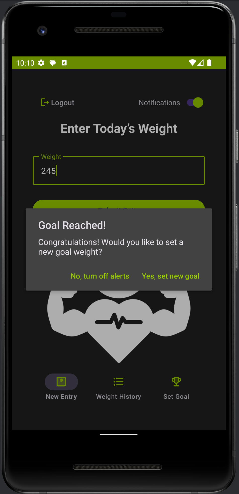
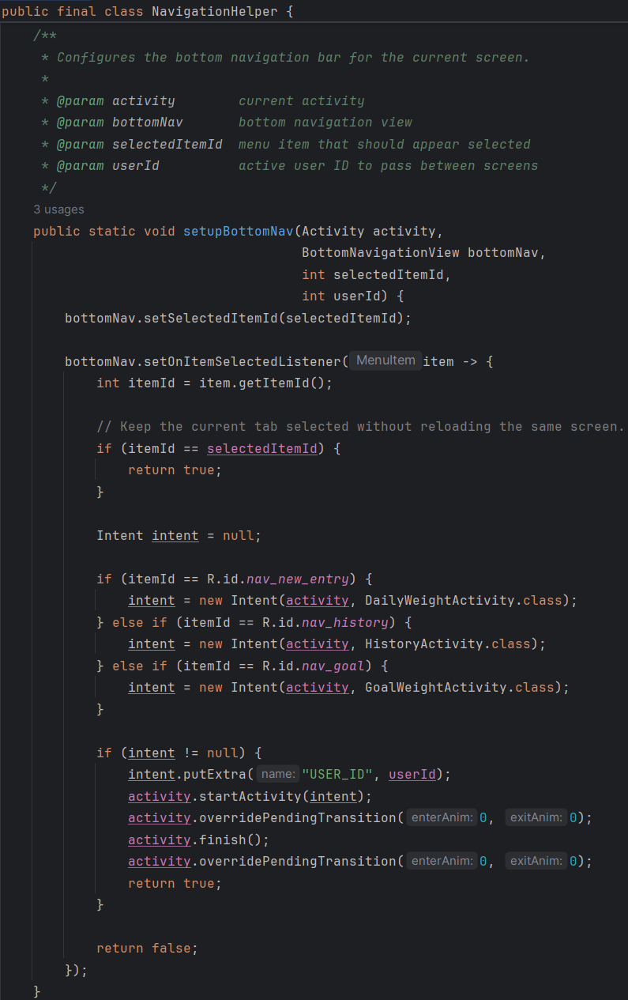
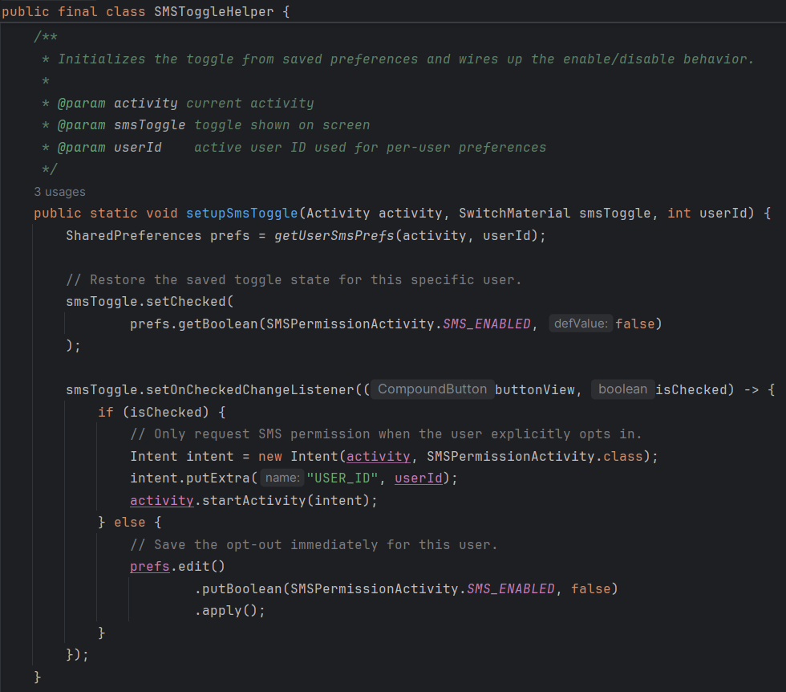
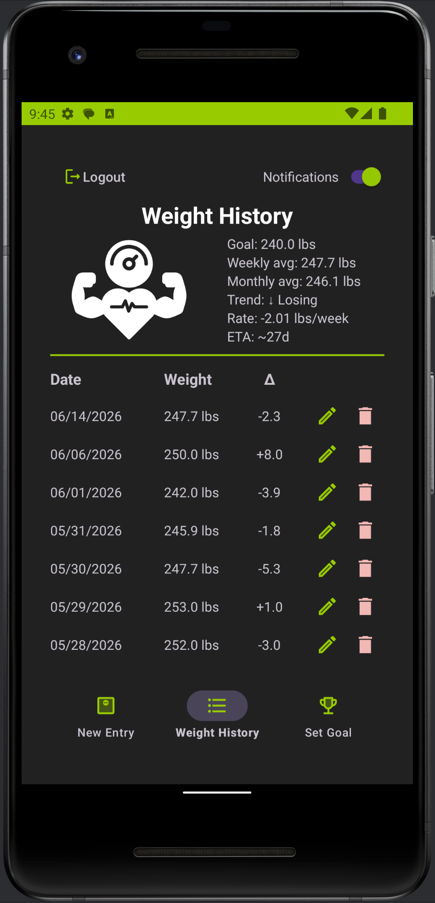
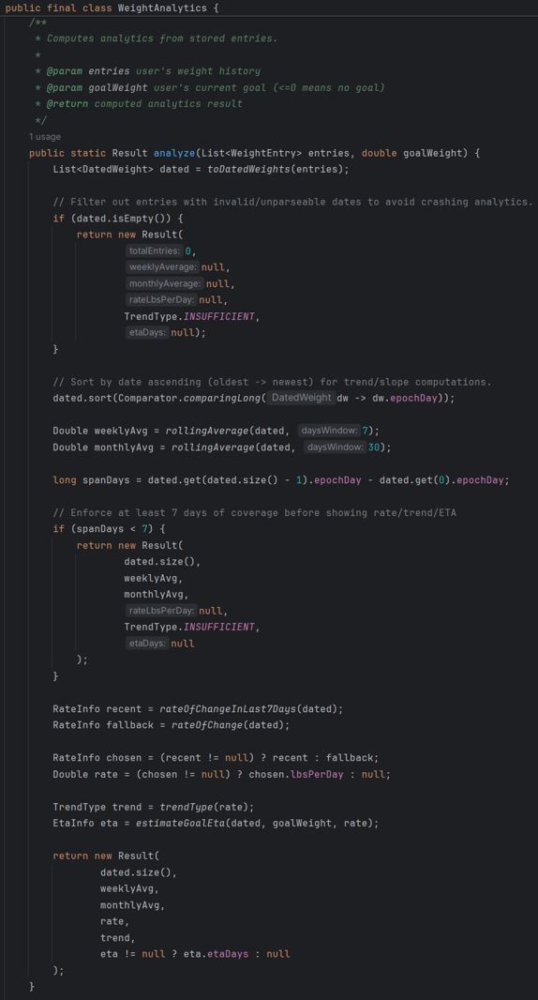
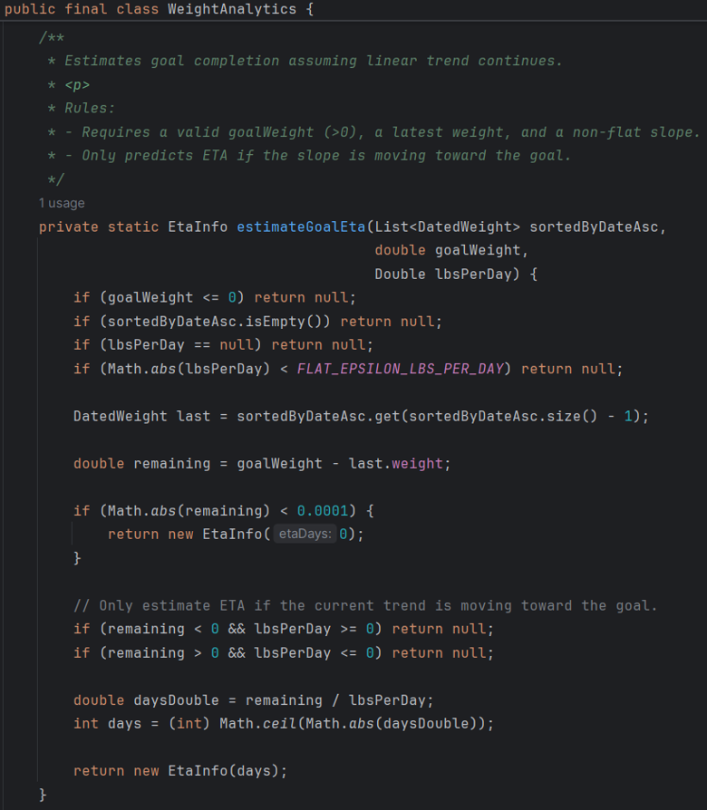
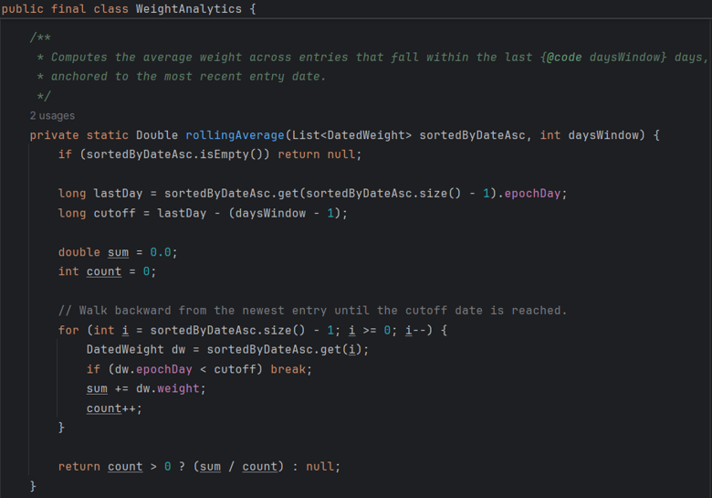
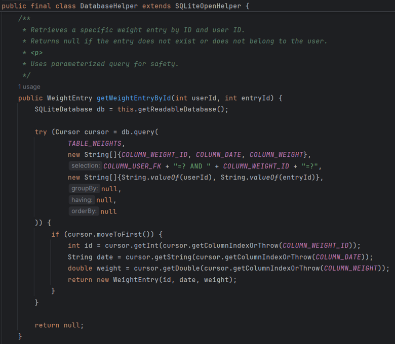
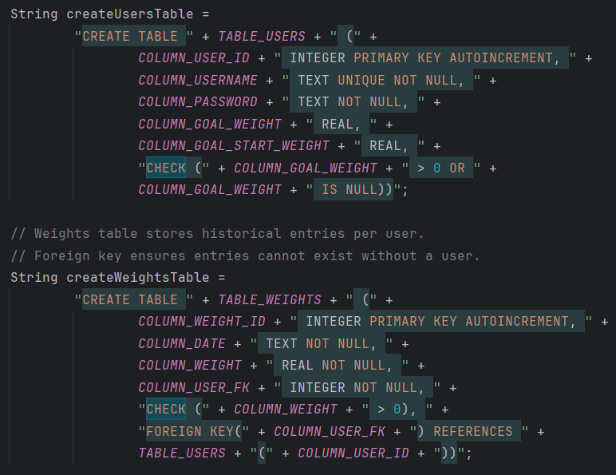

Professional Self-Assessment
[Placeholder: My professional assessment will go here as the final addition.]
Milestone One: Code Review Walkthrough
Course Outcome: Oral, Written, and Visual CommunicationThis video features a structured walk-through of the original Java source code components. It establishes the foundational enhancement goals for modular code structures and database security configurations.
Artifact 1: Software Design & Engineering
Course Outcome: Design and Evaluate Computing SolutionsNarrative
Implementing the software engineering enhancements improved the application by extracting repeated logic into shared helper classes, which made the code cleaner, easier to maintain, and more consistent across screens. Specifically, I created reusable navigation and SMS toggle helpers so the Daily, Goal, and History screens could share the same behavior without duplicating code. These changes demonstrate growth in my software development practices because they reflect a more maintainable and scalable design approach.
This was also a good opportunity to show I can improve an existing codebase without disrupting the original functionality. For example, navigation and toggle logic were originally limited to specific screens, but I refactored that behavior into helper classes and made it accessible from all relevant screens through a bottom navigation bar. This made the app more convenient for the user while also reducing duplication and making the code easier to understand. It required careful attention to shared state, such as the user ID and SMS preferences. In addition, the SMS notification flow now provides better communication when a goal is reached by prompting the user to decide whether they would like to set a new goal right away.
Visual Artifact Demonstrations

Refactored Bottom Navigation
Prompt display allowing the user to configure immediate new goals.
Consistent UI implementation across Daily, Goal, and History tabs.

Architectural Extraction
Project package layout displaying modular utility helper files.

Architectural Extraction
Project package layout displaying modular utility helper files.
Artifact 2: Algorithms & Data Structures
Course Outcome: Algorithmic Principles & PracticesNarrative
For the algorithms and data structures enhancement, I expanded the application beyond basic data entry by adding analytics features that process the user’s historical weight entries. Because weight history is naturally an ordered collection of data points, it provided a good opportunity to demonstrate algorithmic thinking through time-based calculations and careful handling of edge cases. Specifically, I implemented date-window calculations for 7-day and 30-day rolling averages, trend direction (gain/loss/flat), per-entry weight change (Δ), rate of change (computed as lbs/day and displayed as lbs/week), and an estimated time to reach the user’s goal (ETA in days) when enough data is available (see Figures 1-4). I also added consistent rounding and “no data” behavior (represented by an em dash) so the app does not present misleading results when history is limited or a metric cannot be computed responsibly.
This enhancement shows I can improve an existing codebase without disrupting the original functionality. The original history view primarily displayed entries, but the new analytics makes the stored data more useful by summarizing progress in a way that is consistent and interpretable. These improvements also connect with my interest in AI and data-driven development because they focus on extracting meaningful information from data, making defensible assumptions, and ensuring calculations behave reliably.
Visual Artifact Demonstrations

Weight History Analytics
Placeholder

WeightAnalytics.analyze()
Placeholder

estimateGoalEta()
Placeholder

rollingAverage()
Placeholder
Artifact 3: Database Integration & Security
Course Outcome: Security Mindset & Data PrivacyNarrative
For the database enhancement, I focused on both security and performance. I refactored my DatabaseHelper class to use parameterized queries throughout (Figure 1), eliminating the risk of SQL injection attacks and making the codebase more maintainable. I added strategic indexes on frequently queried columns (Figure 2) to optimize query performance for analytics calculations and login validation. I also implemented CHECK constraints at the database level (Figure 3) to enforce data integrity rules (valid weights, reasonable goals, proper date ordering), ensuring invalid data cannot enter the database regardless of application logic. These enhancements take the database design beyond simply storing data by actively protecting against both security threats and data corruption, while supporting efficient querying for features like analytics.
This combination of enhancements shows I can improve an existing codebase across multiple layers (application logic, data structures, and database design) without disrupting original functionality. These improvements connect with my interest in building systems that are secure, efficient, and defensible because they focus on extracting meaningful information from data, making careful assumptions, and ensuring calculations and queries behave reliably.
Visual Artifact Demonstrations

Indexed Queries
Placeholder

Parameterized Query
Placeholder

CHECK Constraints
Placeholder